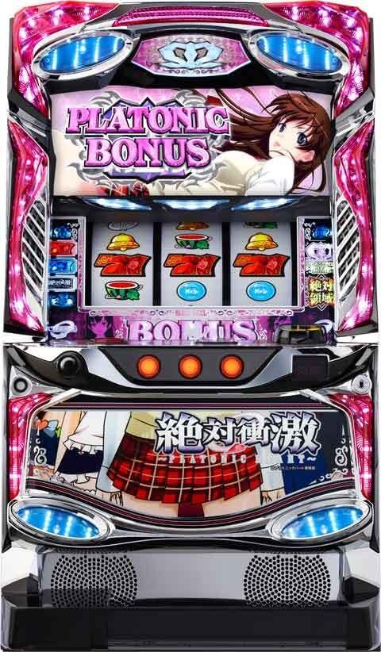
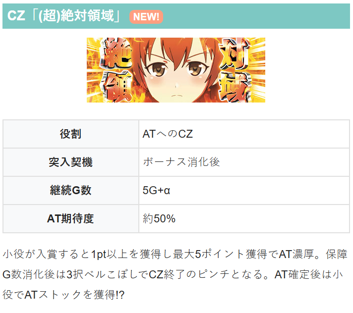
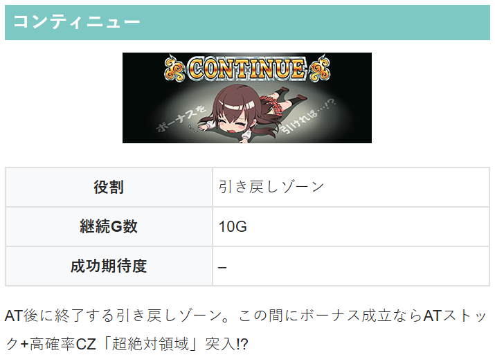
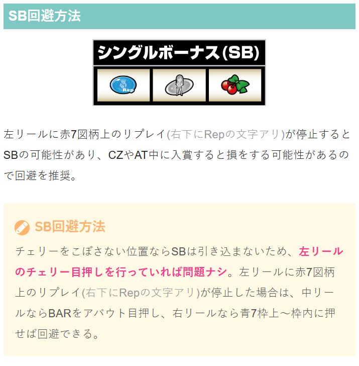

L 絶対衝激～PLATONIC HEART～

【天井情報】
900G＋α消化で次回ボーナスまで継続するATに当選。天井ゲーム数はボーナスかATに当選するとリセットされる。
【リセット判別】
不明
【有利区間について】
不明
※CZやAT中にシングルボーナスが入賞すると損する可能性があるためチェリー狙い推奨。（BAR狙い）
狙い目
【リセット狙い】
690Gから
0Gから10Gくらい回してボーナス成立しなければやめ？
※リセット時は内部的にコンティニューの状態？
【ゲーム数天井狙い】
710Gから
【高確狙い】
夜ステージは高確示唆。夜ステージは消化した方が良さそう？
【有利区間関連狙い】
不明
やめ時
ボーナス後はCZを消化してヤメ。
AT後は引き戻しゾーン（コンティニュー）を消化してヤメ。


その他

参考元
ツラヌキメソッド（無料期待値表）
かめとうさぎのパチスロブログ
基本情報
- メーカー: スパイキー
- 機械割: 97.4% 〜 110.2%
- 導入開始日: 2025年06月16日（月）
- ゲーム性概要: ●リアルボーナス＋ATタイプ ●通常時はレア役を契機にボーナスに当選 ●ボーナス後は必ずCZへ突入 ●CZ成功でAT濃厚 ●ATは1セット30G、純増約0.3枚/Gのセット数管理型 ●AT中の高確ランプ点灯中にボーナス当選で大量ストックに期待!?


打ち方
打ち方・小役
打ち方（小役狙い）
「最初に狙う絵柄」 左リールにBARを狙う（青7狙いでもOK）。 推奨はハサミ打ちで、スイカがテンパイしたら中リールにスイカを狙えばOKだ。

「スイカ停止時」 右リールをフリー打ちし、スイカテンパイ時は中リール赤7を目安にスイカを狙おう。

「小役の停止例」 7枚ベルは斜め揃いが3択、平行に揃うと共通（左1st時）。

「シングル入賞に注意」 左リールにチェリーを狙っておけばシングルが入賞することはないので、左リールはチェリー狙い（BAR or 青7狙い）を推奨だ。

ボーナス中の打ち方
「プラトニックボーナス中」 基本的にはフリー打ちでOK。 予告音＋左右のランプ点滅がJAC INの合図となる。

［予告音＋ランプ点滅時］ 中＆右リールをフリー打ちし、左リール下段〜枠下に赤7を狙おう。 中段にリプ・リプが止まればJAC IN（順押しフリー打ちでもJAC INはするが、変則押しした方が入賞しやすい）。


「バトルボーナス中」 全リールフリー打ちでOK。
CZ中の中押し手順
「最初に狙う絵柄」 CZは小役入賞でチャンスとなるため、小役1確目が出せる中押し赤7狙いもオススメ。 赤7の目押しが早いとブランクが止まってしまう（シングル入賞の可能性あり）ことがあるので、上段を目安に赤7を押そう。

「赤7上段停止時」 リプレイ1確。

「赤7中段停止時」 ハズレ濃厚。

「赤7下段停止時」 チェリーorスイカ濃厚。 左リールにチェリー（BAR or 青7）を狙い、右リールはフリー打ちでOKだ。

「ベル中段停止時」 ベル入賞のチャンス。右リールをフリー打ちし、上段にベルが止まれば3択or共通7枚ベル。下段にベルが止まれば4枚ベルとなる。

リーチ目／出目法則
リーチ目
※左1st時のみ有効

解析情報通常時
小役関連
小役確率
| 役 | 確率 |
|---|---|
| リプレイ | 1/7.3 |
| 赤頭7枚ベル | 1/8.4 |
| 青頭7枚ベル | 1/8.4 |
| 黒頭7枚ベル | 1/8.4 |
| 4枚ベル | 1/32.0 |
| 共通7枚ベル | 1/189.4 |
| スイカ | 1/84.0 |
| チェリー | 1/46.3 |
| リーチ目A | 1/840.2 |
| リーチ目B | 1/910.2 |
ボーナス同時当選期待度
| 役 | 期待度 |
|---|---|
| 共通7枚ベル | 26.0% |
| スイカ | 1.5%（設定1） |
| チェリー | 9.5% |
| リーチ目A | 100% |
| リーチ目B | 100% |
内部状態関連
高確移行率
ボーナス非当選のスイカ成立時に高確移行を抽選。高確は19G or 49Gのゲーム数管理型で、高確中のスイカで高確ゲーム数の上乗せが抽選される。 高確中はおもに夜ステージに滞在し、ボーナス成立で高確CZへ突入する。
［スイカ］高確中の高確ゲーム数加算当選率
| 高確ゲーム数 | 当選率 |
|---|---|
| ＋19G | 19.53% |
| ＋49G | 0.78% |
| トータル | 20.31% |
解析情報ボーナス時
プラトニックボーナス・バトルボーナス
JACゲーム中・小役確率
| 役 | 確率 |
|---|---|
| ベル | 1/1.05 |
| BARフェイク | 1/32.0 |
| BAR揃い | 1/64.0 |
| BAR狙え時の揃い期待度 | 33.3% |
プラトニックボーナス概要
約200枚を獲得できるボーナス。JAC INタイプを採用していて、スピーディーな消化ができるのも特徴だ。 消化中はBARが揃えばAT当選（ストック）濃厚となる。

プラトニックボーナス性能
| 項目 | 内容 |
|---|---|
| 獲得枚数 | 約200枚 |
| 消化中の抽選 | JACゲーム中にBARが揃えばAT当選 （ストック） |
「JAC IN」 レバーON時に予告音＋リール左右のランプが点滅したらJAC IN（リプ・リプ・ベル入賞でJAC IN）の合図。 フリー打ちでもJAC INはするのだが、中＆右リールをフリー打ちして、左リール下段or枠下付近に赤7を狙うと、JAC INの入賞率がアップする。

「BARを狙え」

バトルボーナス概要
REGに相当するボーナス。 獲得枚数は50枚で、背景の心技体の文字で絶対領域（CZ）の保有ポイントを示唆する。

バトルボーナス性能
| 項目 | 内容 |
|---|---|
| 獲得枚数 | 50枚 |
| 備考 | 心技体の文字が完成すれば4pt以上保有 （超絶対領域突入） |
「心技体文字」

小役ゲーム中・ATストック当選率
| 役 | 当選率 |
|---|---|
| 共通7枚ベル | 12.50% |
| リーチ目役 | 100% |
小役ゲーム中は共通7枚ベル成立時にATストックを抽選。リーチ目役はストック濃厚だ。
BAR揃い時・ストック個数振り分け
| 個数 | 振り分け |
|---|---|
| 1個 | 97.07% |
| 2個 | 1.56% |
| 3個 | 0.78% |
| 4個 | 0.10% |
| 5個 | 0.10% |
| 10個 | 0.39% |
JACゲーム中はBARが揃えばストック濃厚で、1契機で最大10個までストックする可能性がある。BAR揃い経由のATは高確ATの可能性あり。
BAR揃い時・高確AT当選率
| 契機 | 当選率 |
|---|---|
| BAR揃い | 12.50% |
ボーナス当選時・ATストック個数振り分け
| 個数 | コンティニュー中 | 絶対領域orAT中 |
|---|---|---|
| 1個 | 87.11% | 98.44% |
| 2個 | 12.50% | 0.78% |
| 3個 | 0.10% | 0.39% |
| 4個 | 0.10% | 0.20% |
| 5個 | 0.10% | 0.10% |
| 10個 | 0.10% | 0.10% |
絶対領域（CZ）
絶対領域概要
ボーナス後に必ず突入する5G＋αのポイント管理型CZ。小役入賞で必ず1pt以上を獲得、最大5ptを獲得すればAT突入となる。 突入時に初期ポイントを持っているケースもあり、対戦相手で保有ポイント数を示唆。高確ランプが点灯すると4pt保有濃厚なので、小役が1回入賞すればOKだ。

絶対領域性能
| 項目 | 内容 |
|---|---|
| 突入契機 | ボーナス後 |
| 継続ゲーム数 | 5G＋α（3択ベルこぼしまで） |
| 消化中の抽選 | 小役入賞で1pt以上獲得濃厚、最大5pt獲得でAT （5pt到達後は小役入賞でストック獲得） |
| 備考 | 高確ランプ点灯時は超絶対領域 |
「対戦相手」

対戦相手ごとの保有ポイント
| 対戦相手 | ポイント |
|---|---|
| 雁金壬羽 | 全ポイントの可能性あり |
| 遠里小野千栄 | 2pt以上濃厚 |
| 愛川愛 | 3pt以上濃厚 |
「超絶対領域」 バトルボーナス中の心技体点灯時などに突入（左右の高確ランプが点灯）。 超絶対領域は4pt以上を保有しているので、小役が1回入賞すればAT濃厚。最低5G継続のため、ATストック獲得にも期待できる。

5pt到達前・AT（ストック）当選率
| 役 | 当選率 |
|---|---|
| 共通7枚ベル | 1.56% |
| スイカ | 12.50% |
| チェリー | 1.56% |
5pt到達前は共通7枚ベルとレア役成立時にAT当選の可能性あり。 内部的に5ptに到達した時点でAT（ストック）濃厚で、以降は小役揃いのたびにストックを獲得する。
5pt到達後・小役入賞時のATストック個数振り分け
| 個数 | 振り分け |
|---|---|
| 1個 | 95.51% |
| 2個 | 3.13% |
| 3個 | 0.78% |
| 4個 | 0.39% |
| 5個 | 0.10% |
| 10個 | 0.10% |
※5pt到達時（AT当選時）も上記振り分けでストックを獲得
初期CZポイント抽選
ボーナス当選時に設定に応じて初期CZポイントを抽選。高確（夜ステージ）中にボーナスを引けば高確CZ突入濃厚となる。
プラトニックタイム（AT）
AT概要
30G継続のセット管理型AT。純増自体は控えめなので、ボーナスとのループが出玉増加のカギ。 AT中のボーナス当選時はストック1個以上＋CZに突入するため、複数ストックに期待できる。

プラトニックタイム性能
| 項目 | 内容 |
|---|---|
| 突入契機 | CZ成功、プラトニックボーナス中のBAR揃い |
| 継続ゲーム数 | 30G/セット |
| 1Gあたりの純増 | 約0.3枚 |
| ボーナス当選時 | ATストック（1～10個）＋CZ突入 |
| AT終了後 | コンティニューへ |
| その他 | AT開始時の一部で高確ATに突入 （リール左右の高確ランプが点灯） |
「継続バトル」 ATのラスト3Gで発生。ストックあり時は勝利してATが継続、敗北時はコンティニューへ移行する。

AT開始時・高確AT当選率
| タイミング | 当選率 |
|---|---|
| AT開始時 | 12.50% |
［スイカ］ATストック当選率（ボーナス非当選時）
| 個数 | 当選率 |
|---|---|
| 1個 | 1.56% |
| 10個 | 0.39% |
コンティニュー
コンティニュー概要
ATセットストックを使い切ると移行する引き戻し状態。引き戻しの条件はボーナス当選なので厳しいが、ボーナス当選時はAT＋超絶対領域突入だ。

コンティニュー性能
| 項目 | 内容 |
|---|---|
| 突入契機 | AT終了後 |
| 継続ゲーム数 | 10G |
| 消化中の抽選 | ボーナス当選でAT＋超絶対領域突入 |
エンディング
エンディングボーナス
有利区間の残り枚数が100枚以下になるとエンディングが発生。 エンディング中に引いたボーナスor有利区間の残り枚数が300枚以下で引いたプラトニックボーナスはエンディングボーナスになる。 有利区間リセットによる出玉的恩恵はないが、エンディングボーナス中のBAR揃いやリーチ目役成立時は高確率でナミちゃんトロフィーが出現する（設定2以上の場合）。

演出情報
通常時
ステージ解説
| ステージ | 示唆 |
|---|---|
| 原宿 | デフォルト |
| 渋谷 | デフォルト |
| 夜 | 高確示唆 |
［原宿］

［渋谷］

［夜］

連続演出
通常時の連続演出は4種類で、演出成功でボーナス濃厚。どの演出も赤タイトル発生でチャンスアップとなる
「じゃんけん対決」

「騎馬戦対決」

「大食い対決」

「パン争奪対決」

裏ボタン
ボーナス当選契機判別

プラトニックハートランプごとの同時当選契機示唆
| 色 | 契機 |
|---|---|
| 青 | リプレイ |
| 紫 | 共通7枚ベル |
| 赤 | チェリー |
| 緑 | スイカ |
| 白 | その他（リーチ目など） |
ボーナスを揃えたタイミングでPUSHボタンを押すと、プラトニックハートランプの色でボーナス当選契機を判別できる。